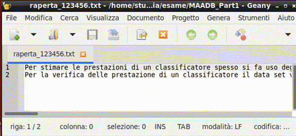

Istruzioni per gli studenti che sostengono l'esame di MAADB
Checklist
- So come individuare la mia postazione di lavoro
- So cosa posso tenere con me durante l'esame
- So che tra l'inizio della prova e la consegna non potrò lasciare la postazione
- So che per avviare e poi per consegnare ciascuna prova dovrò eseguire uno script
(file
.sh), e so in che cartella si trova ciascuno di questi script - So utilizzare il notebook di verifica formale
check_exam.mlxin Matlab - Sono consapevole allo scadere del tempo di ciascuna prova il contenuto della
cartella
esameverrà prelevato da remoto e che non saranno valutati eventuali file non ancora salvati - So che se dovessi decidere di ritirarmi dall'esame dovrò indicarlo chiaramente
Sommario
- Istruzioni per gli studenti che sostengono l'esame di MAADB
- Struttura dell'esame
- Le istruzioni in breve
- Operazioni preliminari
- Parte 1: Problemi in ambiente Matlab
- Parte 2: Quesiti
- La cartella condivisa 'esami'
- Le applicazioni da utilizzare
- Operazioni preliminari sui file d'esame
- Conclusione dell'esame
- Appendice - Risoluzione problemi tecnici
Struttura dell'esame
L'esame si compone di tre prove:
- problemi in ambiente Matlab (da svolgersi nella Parte 1)
- quesiti a risposta chiusa (da svolgersi nella Parte 2)
- quesito a risposta aperta (da svolgersi nella Parte 2)
Le prove sono svolte in sequenza con una breve pausa tra la Parte 1 e la Parte 2:
La durata della Parte 1 è di 90 minuti.
La durata della Parte 2 è di 120 minuti, di cui si possono utilizzare al massimo 60 minuti per i quesiti a risposta chiusa.
Punteggio
| Prova | Punteggio massimo |
|---|---|
| Problemi in Matlab | 12/30 |
| Quesiti a risposta chiusa | 16/30 |
| Quesito a risposta aperta | 4/30 |
| Totale | 32/30 |
Riceverà la lode chi otterrà un punteggio non inferiore a 31/30.
Maggiori dettagli sono riportati nelle sezioni dedicate a ciascuna prova.
Le istruzioni in breve
In estrema sintesi, l'esame prevede che gli studenti seguano questa procedura:
- Arrivare in aula in anticipo rispetto all'orario di inizio dell'esame, per consentire di completare le operazioni preliminari. Portare con sé un documento di identità.
- Individuare la propria postazione di lavoro nell'elenco proiettato sugli schermi dell'aula. Tenere con sé solo un documento di identità e altri oggetti strettamente necessari, mentre tutti gli altri oggetti devono essere riposti fuori dalla portata.
- Inserire la propria matricola nella maschera di identificazione presente sulla app
Tiburexam. - Attendere la distribuzione dei file nella cartella
esamepresente sul desktop. Entrare nella sottocartellaMAADB_Part1. - Eseguire (doppio click) lo script
avvia-problemi.sh, che avvierà il Matlab. Svolgere i problemi, assistendosi con il tool di verifica formalecheck_exam.mlx. - Completato lo svolgimento dei problemi, salvare i file e chiudere il Matlab. Eseguire
(doppio click) il file
consegna-problemi.shper consegnare lo svolgimento. -
Dopo la pausa, ripetere i punti precedenti per la Parte 2 dell'esame:
- entrare nella sottocartella
MAADB_Part2 - eseguire lo script
avvia-rchiusa.shper aprire i file dei quesiti a risposta chiusa e lo scriptconsegna.rchiusa.shper consegnare le risposte - eseguire lo script
avvia-raperta.shper aprire i file del quesito a risposta aperta e lo scriptconsegna-raperta.shper consegnare le risposte
- entrare nella sottocartella
-
Al termine dell'esame, lasciare l'aula in silenzio oppure, se mancano meno di 10 minuti allo scadere del tempo, attendere alla propria postazione.
Nel resto del documento sono fornite le istruzioni dettagliate per ciascuna di queste operazioni e indicazioni per la risoluzione di eventuali problemi.
Si presuppone che gli studenti che sostengono l'esame abbiano già letto questo documento.
Operazioni preliminari
La convocazione
La convocazione avviene di norma entro due giorni feriali dopo la chiusura delle prenotazioni ed è inviata via email agli studenti che si sono prenotati su Infostud. Nella convocazione sono contenuti:
- l'orario di inizio dell'esame (quello riportato su infostud è indicativo)
- l'aula in cui si svolgerà l'esame (di norma a Via Tiburtina 205)
- l'incoraggiamento a leggere queste istruzioni
- l'invito, in caso di impossibilità a presentarsi all'esame, a darne comunicazione ai docenti
La postazione di lavoro
L'accesso all'aula d'esame è consentito nei 10 minuti precedenti l'orario di inizio della prova. Si raccomanda presentarsi almeno con questo anticipo, sia per consentire che le operazioni preliminari siano completate senza ritardi che per non perdere eventuali comunicazioni.
Di norma, l'assegnazione delle postazioni di lavoro è proiettata sugli schermi dell'aula. (In alcuni casi, potrebbe essere stampata ed affissa sulla porta d'ingresso.) In caso di dubbi, è consigliabile chiedere assistenza ai docenti.
La postazione è individuata da un numero e una lettera, ad esempio "1A", "2C", etc. Il numero indica la fila, a partire dalla cattedra. La lettera indica la postazione nella fila, a partire da sinistra.
Attenzione
Lo studente è tenuto ad occupare la postazione indicata e ogni cambio di postazione deve essere autorizzato da un docente.
È necessario tenere un documento di identità sulla scrivania, mentre andranno rimossi tutti gli oggetti non necessari. Gli elementi consentiti includono penna/matita, bottiglia d'acqua, medicinali. Gli astucci dovranno essere riposti nello zaino/borsa. Il telefonino dovrà essere spento e riposto riporlo nello zaino/borsa. I fogli di carta (bianchi) saranno forniti dai docenti.
Zaini, borse e giacche devono essere fuori portata, ad esempio in prossimità del muro.
Attenzione
Essere colti durante lo svolgimento della prova con oggetti non consentiti comporta potenzialmente l'esclusione dalla prova.
Si raccomanda attenzione per evitare che azioni magari innocue, come ad esempio indossare un orologio smart, possano essere interpretate come tentativi di ottenere un vantaggio illecito.
Una volta avviata la prova, non sarà permesso lasciare la postazione fino a quando non si sarà consegnato lo svolgimento. Si invita a essere previdenti e utilizzare saggiamente il tempo che precede l'avvio della prova e la pausa.
Identificazione studente
L'identificazione avviene in due fasi:
- appena lo studente prende posto nella postazione assegnata
- quando il docente verifica il documento di identità
La prima fase avviene tramite l'applicazione Tiburexam, che è già avviata sulla postazione e consente di inserire la propria matricola e confermare la propria identità.
Todo
Tip
Se l'applicazione Tiburexam non è già avviata, è possibile farlo
utilizzando lo script start-exam.sh presente nella cartella esame sul desktop.
Il documento di identità dovrà rimanere sulla scrivania durante la prova, in modo che i docenti possano verificarlo senza interrompere lo svolgimento.
Parte 1: Problemi in ambiente Matlab
Le modalità di svolgimento sono analoghe a quelle descritte durante le esercitazioni. È importante avere cognizione dell'elenco dei nomi delle variabili a cui è richiesto che siano assegnati i risultati, descritto nella traccia. La traccia contiene anche indicazioni sulla forma (scalare, vettore colonna, etc.) che deve assumere la variabile.
Startup
Prima di aprire gli m-file contenenti le tracce d'esame, è necessario applicare alcune configurazioni all'ambiente Matlab lanciando il comando "startup_exam".
A questo fine, digitare startup_exam nella command window, seguito dal tasto INVIO.
(In alternativa, aprire il m-file startup_exam.m nell'editor e cliccare sull'icona 'Run')
Al termine dell'esecuzione, verrà aperto automaticamente il live script descritto nella sezione seguente
Exam checker
Il tool di verifica formale è un live script che automatizza le verifiche su nomi e sulla forma delle variabili, e fornisce all'esaminando un report sullo stato di completamento dell'esame.
Questo tool viene lanciato automaticamente una volta eseguito 'startup_exam'. Alternativamente, può essere lanciato dalla command line digitando 'edit check_exam' (seguito dal tasto INVO).
Alla prima esecuzione è necessario digitare nel campo predisposto la propria matricola. A seguire si dovrà verificare la corretta denominazione dei file degli script contenenti lo svolgimento dei problemi (pulsante 'Verifica files').
{width="2.4305555555555554in" height="0.7916666666666666in"}
Successivamente, durante lo svolgimento dell'esame, si potranno eseguire le verifiche sulle variabili e sulle figure generate dallo script. È possibile limitare la verifica a uno solo degli script, oppure verificare entrambi.
 {width="3.8333333333333335in"
height="0.5694444444444444in"}
{width="3.8333333333333335in"
height="0.5694444444444444in"}
Si raccomanda che queste verifiche siano eseguite [ripetutamente,]{.underline} per esempio dopo il completamento di ciascun quesito che compone il problema.
Durante lo svolgimento dell'esame dovranno essere eseguite [almeno una volta]{.underline} tutte le verifiche formali.
Può accadere che il tool di verifica emetta [messaggi di errore inattesi]{.underline} se durante l'esame è stato eseguito un 'clear all' nella command window. In questo caso è sufficiente eseguire per intero il live script di verifica utilizzando il pulsante RUN di Matlab.
Al termine dell'esame, il tool consente (ancora solo a titolo sperimentale) di gestire la consegna. Un eventuale errore emesso in questa procedura [non pregiudica]{.underline} la corretta consegna dell'elaborato.
Indicazioni per lo svolgimento dei problemi (?)
 {width="6.5in"
height="3.6666666666666665in"}
{width="6.5in"
height="3.6666666666666665in"}
Punteggio
Il punteggio massimo attribuito alla prova in Matlab è di 12 punti.
Il punteggio massimo attribuito a ciascun quesito è riportato nella traccia del problema.
Tempo
Il tempo a disposizione per la prova è di 90 minuti.
(segue)
Parte 2: Quesiti
Analogamente ai file Matlab, prima di iniziare la prova è necessario rinominare i file .txt, sostituendo il proprio numero di matricola al segnaposto MATRICOLA.
È sufficiente un [doppio click]{.underline} per aprire nell'applicazione Visual Studio Code i file:
MAADB_2024-09_rchiusa_\<matricola>.txt\ MAADB_2024-09_raperta_\<matricola>.txt
È necessario modificare la visualizzazione (menu View -> Word Wrap), in modo che raggiunto il margine destro il periodo prosegua sulla riga successiva invece di proseguire sulla medesima linea.
Durante lo svolgimento dell'esame [salvare frequentemente]{.underline} i file txt (scorciatoia da tastiera: CTRL+S). Al termine della prova verificare scrupolosamente che il contenuto dei file (salvati) rifletta quanto si intende consegnare, per esempio chiudendo e riaprendo i file.
La valutazione terrà conto esclusivamente del contenuto dei file txt salvati nella cartella 'esame' al momento del ritiro degli elaborati.
Quesiti a risposta chiusa
La traccia (file pdf) e il template dello svolgimento (file txt) contengono ulteriori istruzioni per la compilazione delle risposte. Si sottolinea che lo spazio per "commenti" non è previsto per estendere la risposta, ma per segnalare eventuali ambiguità della domanda e comunicare la propria interpretazione.
Al termine del tempo a disposizione (60 minuti dall'inizio della Parte 2), salvare definitivamente e chiudere il file.
Il punteggio massimo attribuito ai quesiti a risposta chiusa è XX punti. Tutti i quesiti hanno lo stesso valore, ottenuto dividento il punteggio massimo per il numero di quesiti, pari a V. Ogni risposta corretta aggiunge V al punteggio. Le risposta non date non contribuiscono al punteggio. Ogni risposta sbagliata sottrae V/2 al punteggio.
Eventuali modifiche apportate successivamente non saranno valutate.
Quesiti a risposta aperta
La traccia (file pdf) contiene i criteri di valutazione che saranno utilizzati per attribuire il punteggio allo svolgimento.
L'elaborazione della risposta aperta potrà iniziare immediatamente dopo aver completato le risposte chiuse, anche prima che sia esaurito il tempo a disposizione per queste ultime.
E' possibile verificare il numero di caratteri dello svolgimento ...
Al termine del tempo a disposizione (120 minuti dall'inizio della Parte 2), salvare definitivamente chiudere il file, assicurandosi di aver salvato le modifiche.
La cartella condivisa 'esami'
I file necessari per lo svolgimento della prova si troveranno nella cartella esame, di
cui è presente un link sul desktop.

All'inizio dell'esame, la cartella conterrà:
- una copia di questo documento in formato pdf (
istruzioni.pdf). - Il formulario (
MAADB cheat sheet <versione>.pdf) - le tavole statistiche (
tavole_z_t_chi2_F.pdf)
Inoltre, la cartella contiene uno script per avviare l'applicazione Tiburexam
(start-exam.sh). Nota bene: di norma l'applicazione Tiburexam è già avviata. Lo
script serve per riavviarla in caso di chiusura accidentale.
Le tracce verranno distribuite mediante il server dell'aula e appariranno
nella cartella pochi secondi dopo la distribuzione (che verrà chiaramente annunciata dal
docente). Trattandosi di una condivisione di rete, il file manager potrebbe richiedere
un aggiornamento manuale della visualizzazione del contenuto della cartella, utilizzando
il menu Visualizza > Ricarica cartella
Tip
Per aggiornare il la visualizzazione del contenuto della cartella è possibile
anche premere il tasto F5.
Tip
Per visualizzare più facilmente i nomi dei file, è possibile passare alla
visualizzazion a lista utilizzando il menu Visualizza > Modalità vista cartella >
Vista lista dettagliata oppure premendo la combinazione di tasti CTRL+4.

Successivamente, mediante il sistema di distribuzione d'aula, nella cartella verranno aggiunte in successione due sottocartelle:
MAADB_Part1: con i file necessari per la Parte 1 dell'esame (file.me.mat)MAADB_Part2: con i file necessari per la Parte 2 dell'esame (filepdfe.txt)
In appendice è riportata la struttura completa della cartella esame.
Anche il ritiro avverrà tramite il server d'aula, e comprenderà tutti e soli i documenti contenuti nella cartella 'esame'. Si raccomanda di non spostare altrove i propri elaborati, per evitare che risultino non consegnati (e quindi non valutabili).
Quando il docente annuncia che sta per procedere al ritiro degli svolgimenti, accertarsi di aver salvato i file e chiuso i documenti contenenti lo svolgimento (e se non più in uso di aver chiuso l'editor -- Matlab o Geany).
Le applicazioni da utilizzare
Matlab
Matlab R2023b è installato sul PC e viene utilizzato per la Parte 1 dell'esame.
Di norma viene avviato utilizzando lo script avvia-problemi.sh presente nella cartella
MAADB-Part1. Lo script, oltre ad avviare l'applicazione, configura l'ambiente per
l'esame:
- imposta
MAADB_Part1come cartella di lavoro del Matlab - aggiunge al path di Matlab il toolbox di verifica formale, che include il notebook
check_exam.mlx - copia nella cartella di lavoro gli script contenuti nella sottocartella
templates, modificandone il nome per includere il numero di matricola dello studente - apre nell'editor gli script descritti al punto precedente
- avvia il notebook
check_exam.mlx, che consente di verificare lo stato di avanzamento dello svolgimento e di eseguire le verifiche formali sulle variabili.
E' sempre possibile avviare Matlab senza fare uso dello script, ma in questo caso è
necessario eseguire manualmente le stesse operazioni di configurazione, che sono
descritte nella sezione
Malfunzionamento dello script avvia-problemi.sh
in Appendice.
Geany (editor di testo)
Geany è l'editor di testo utilizzato per la Parte 2 dell'esame.

L'applicazione:
- mostra chiaramente quali file non sono ancora stati salvati (tab di colore rosso)
- mostra nella barra di stato il numero di caratteri del testo selezionato

Tip
Per lo svolgimento della prova, è opportuno modificare la visualizzazione in modo che il testo venga visualizzato su più righe, senza che le righe superino il margine destro dello schermo. A questo fine, è necessario attivare il word wrap (menu View -> Word Wrap).

Tip
Se all'avvio oltre ai documenti di testo vengono visualizzati ulteriori pannelli, è possibile nasconderli trascinandone il bordo verso il margine.

Si norma viene avviato utilizzando gli script avvia-raperta.sh avvia-rchiusa.sh
presenti nella cartella MAADB-Part2. Questi script, oltre ad avviare l'applicazione:
copiano nella cartella di lavoro:
- copia nella cartella di lavoro i documenti di testo contenuti nella sottocartella
templates, modificandone il nome per includere il numero di matricola dello studente - apre nell'editor gli script descritti al punto precedente
xPDF (visualizzatore di file pdf)
xPDF è il visualizzatore di file pdf predefinito sui PC d'esame.
Alternativa
Valutare se far aprire i file pdf nel browser, ad esempio Firefox, invece che in xPDF.
Operazioni preliminari sui file d'esame
Sia per la Parte 1 che per la Parte 2 dell'esame, [prima di aprire le tracce]{.underline} è necessario rinominare tutti i file che nel nome contengono il segnaposto 'MATRICOLA', che va sostituito con il proprio numero di matricola.
È importante accertarsi che il numero di matricola nel nome del file sia
corretto e che non siano stati inavvertitamente modificati i caratteri
precedenti e seguenti (_ e .).
Conclusione dell'esame
L'esame si conclude chiudendo tutti i file, le applicazioni e le cartelle utilizzati durante l'esame. Ai fini della valutazione faranno fede gli svolgimenti presenti nella cartella 'esame', che saranno ritirati allo scadere del tempo messo a disposizione.
Sia durante la Parte 1 che la Parte 2 è possibile lasciare in anticipo l'aula d'esame, purché sia già stata effettuata la verifica del documento di identità. È comunque richiesto di che l'intenzione di lasciare l'aula venga segnalata ad un docente.
Se si intende ritirarsi dall'esame è necessario che nel compito sia stata esplicitamente registrata questa scelta e che un docente ne sia stato informato.
In caso di rinuncia all'esame, sulla [prima riga dei file]{.underline} da consegnare (file .m oppure .txt) dovrà apparire esclusivamente la parola "RITIRATO" (o "RITIRATA").
(segue)
Appendice - Risoluzione problemi tecnici
Gli script di avvio e consegna delle prove sono stati verificati sulle postazioni di esame e dovrebbero funzionare correttamente. Tuttavia, in caso di problemi, è possibile procedere manualmente (come fatto dagli studenti degli anni accademici precedenti).
Malfunzionamento dello script avvia-problemi.sh
La procedura riportate di seguito è necessaria solo in caso di malfunzionamento dello script di avvio. In condizioni normali, è sufficiente eseguire lo script avvia-problemi.sh presente nella cartella MAADB_Part1.
1. Avvio Matlab
L'applicazione può essere lanciata utilizzando menu delle applicazioni del sistema operativo, sottomenu "Programmazione".
Screenshot menu "Programmazione
2. Impostazione della cartella di lavoro
Una volta lanciato il Matlab, è necessario
cambiare la cartella di lavoro in modo che nel file browser integrato
sia visualizzato il contenuto della cartella MAADB_Part1 presente nella
cartella esame sul desktop.
Per spostarsi nella cartella MAADB_Part1 è possibile navigare tra le
cartelle del sistema operativo tramite il file browser di Matlab.
Il percorso completo della cartella è /home/studente/Scrivania/esame/MAADB_Part1.
Screenshot Barra percorso di Matlab

Attenzione
Un errore comune è spostarsi nella cartella Esame e da qui
utilizzare il file browser per visualizzare il contenuto della sottocartella
MAADB_Part1. In questo caso, Matlab non sarà in grado di eseguire gli script
dell'esame perché non sono nella cartella corrente.
Percorso di rete equivalente
E' normale che nella barra di navigazione il
percorso visualizzato sia /media/sf_esame/MAADB_Part1. Infatti, il percorso
/home/studente/Scrivania/esame/MAADB_Part1 è un collegamento simbolico al percorso
/media/sf_esame/MAADB_Part1.
procedure alternative
Per impostare la cartella di lavoro di Matlab, è anche possibile:
- utilizzare nella Command Window il comando cd /media/sf_esame/MAADB_Part1
- incollare nella barra di navigazione il percorso della cartella.
3. Configurazione del toolbox di verifica formale
Per configurare il toolbox di verifica formale, è necessario eseguire il
comando startup_exam nella command window di Matlab, seguito dal tasto INVIO.
(In alternativa, è possibile aprire il file startup_exam.m nell'editor senza modificarlo e cliccare sull'icona 'Run').
Al termine dell'esecuzione, verrà aperto automaticamente il live script di verifica formale
check_exam.mlx, che consente di verificare lo stato di avanzamento dello svolgimento e di
eseguire le verifiche formali sui file e sulle variabili.
Creazione
Sia per la Parte 1 che per la Parte 2 dell'esame, [prima di aprire le tracce]{.underline} è necessario rinominare tutti i file che nel nome contengono il segnaposto 'MATRICOLA', che va sostituito con il proprio numero di matricola.
È importante accertarsi che il numero di matricola nel nome del file sia corretto e che non siano stati inavvertitamente modificati i caratteri precedenti e seguenti ("_" e ".").
Come aprire manualmente i file pdf
 {width="1.5078740157480315in"
height="1.8425196850393701in"}Purtroppo, sulla postazione di esame
l'applicazione di default per I file pdf è Libre Office, che [non
restituisce una visualizzazione corretta]{.underline} del file. È quindi
importante non aprire i file pdf mediante un doppio click. È invece
necessario utilizzare l'applicazione xPDF.
{width="1.5078740157480315in"
height="1.8425196850393701in"}Purtroppo, sulla postazione di esame
l'applicazione di default per I file pdf è Libre Office, che [non
restituisce una visualizzazione corretta]{.underline} del file. È quindi
importante non aprire i file pdf mediante un doppio click. È invece
necessario utilizzare l'applicazione xPDF.
A questo fine, eseguire un [click-destro]{.underline} sul file pdf e selezionare xPDF dal menu contestuale.

Se questo file è erroneamente aperto nell'applicazione Libre Office, chiudere l'applicazione e riaprire il file con l'applicazione xPdf.
Come aprire manualmente i file txt
Da completare
Questa sezione deve ancora essere completata. Aggiungere le istruzioni mancanti qui. | |
Struttura della cartella 'esame'
La cartella 'esame' contiene i file necessari per lo svolgimento della prova. La struttura della cartella alla chiusura dell'esame è la seguente:
esame/
├── istruzioni.pdf
├── MAADB_cheat_sheet_<versione>.pdf
├── tavole_z_t_chi2_F.pdf
├── start-exam.sh (*)
├── student_<lastname>.<matricola> (1)
├── MAADB_Part1/
│ ├── 1-avvia-problemi.sh
│ ├── 2-consegna-problemi.sh
│ ├── startup.m (*)
│ ├── templates/
│ │ ├── problema1_MATRICOLA.m
│ │ ├── ...
│ │ └── problema<n>_MATRICOLA.m
│ ├── matfiles/
│ │ ├── <problem-data>.mat
│ │ ├── <problem-data>.mat
│ │ └── ...
│ ├── problema1_<matricola>.m (2)
│ ├── ... (2)
│ ├── problema<n>_<matricola>.m (2)
│ └── submitted/ (3)
│ ├── presubmission_checks_<matricola>_<timestamp>.html
│ ├── problema1_<matricola>_<timestamp>.html
│ ├── ...
│ └── problema<n>_<matricola>_<timestamp>.html
└── MAADB_Part2/
├── 1-avvia-rchiusa.sh
├── 2-consegna-rchiusa.sh
├── 3-avvia-raperta.sh
├── 4-consegna-raperta.sh
├── domande-rchiusa.pdf
├── domande-raperta.pdf
├── templates/
│ ├── rchiusa_MATRICOLA.txt
│ └── raperta_MATRICOLA.txt
├── rchiusa_<matricola>.txt (4)
├── raperta_<matricola>.txt (6)
└── submitted/
├── rchiusa_<matricola>.txt (5)
└── raperta_<matricola>.txt (7)
(1) Creato dopo l'identificazione dello studente
(2) Creato dallo script `avvia-problemi.sh` a partire dal template
(3) Cartella e contenuto creati dallo script `consegna-problemi.sh` dopo la consegna
(4) Creato dallo script `avvia-rchiusa.sh` a partire dal template
(5) Creato dallo script `consegna-rchiusa.sh` dopo la consegna
(6) Creato dallo script `avvia-raperta.sh` a partire dal template
(7) Creato dallo script `consegna-raperta.sh` dopo la consegna
(*) Di norma questi file possono essere ignorato. Vengono utilizzati in caso di
malfunzionamento delle procedure usuali.